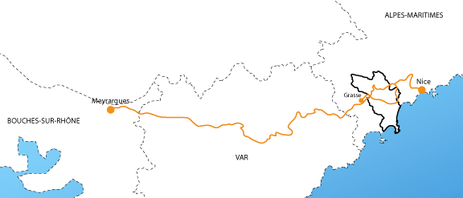
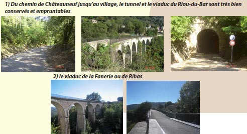
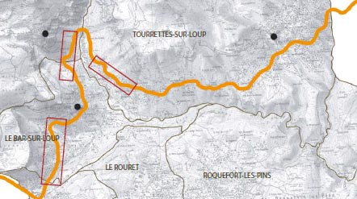
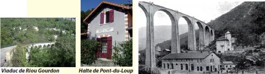
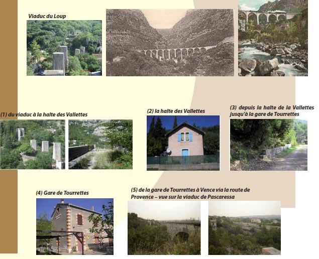

Le patrimoine contemporain - Les déplacements - Le chemin de fer

Tracé Chemin de Fer du Sud de la France : ligne Nice-Meyrargues
LIGNE Nice-Meyrargues
tronçon Nice-Grasse
Nice
La Madeleine
St Isidore
Lingostière
St Sauveur
Colomars
Gattières
St Jeannet
Vence
Tourrettes-sur-Loup
Les Valettes
Le Loup
Le Bar
Magagnosc Château
Grasse
Un peu d’histoire…
Lors de sa construction par la Compagnie des Chemins de fer du Sud de la France dès 1886, pour une question de coûts, la ligne Nice-Meyrargues a vu son tracé modifié et rendu plus sinueux pour mieux épouser les contours du relief. Le tracé emprunte un panorama exceptionnel sur les communes du Bar-sur-Loup, de Gourdon et de Tourrettes-sur-Loup. Cette ligne prit peu à peu un caractère typique de ligne locale : un tronçon de Nice à Grasse (donc passant sur le territoire de la CASA), un autre de Grasse à Draguignan et un dernier de Draguignan à Meyrargues, chacun emprunté par une population différente. Dès 1920, les difficultés de la Compagnie du Sud de la France et la baisse de fréquentation firent que la ligne fut pauvrement desservie, par tronçons sans correspondance entre eux. Il fallait alors 48h pour parcourir 210 km entre Nice et Meyrargues ! La ligne connut un regain d’intérêt avec l’acquisition en 1935 des autorails, remplaçant avantageusement les trains à vapeur. Pendant la Seconde Guerre Mondiale, les Chemins de fer de Provence furent sérieusement mis à contribution. C’est dans la nuit du 24 Août 1944 que le coup de grâce eut lieu pour cette ligne.; un commando allemand déclencha des charges explosives sur trois grands ouvrages dont deux sis dans la CASA : le viaduc du Loup (4 arches détruites) et le viaduc de Pascaressa (près de Tourrettes-sur-Loup, 2 arches détruites). L’inflation d’après-guerre ne permet pas la reconstruction et le trafic de la ligne s’effondre, concurrencé par la route. Le 23 Juin 1949, le Conseil Supérieur des Transports annonce la non reconstruction des ouvrages détruits et la fermeture de la ligne ferroviaire (fixée au 2 Janvier 1950). La voie est démontée pendant l’été 1951 et la plateforme ferroviaire donnée aux communes.
LE BAR-SUR-LOUP
- Sous Pré-du-Lac, le tracé empruntait le tunnel de Pré-du-Lac actuellement obstrué, d’une longueur de 515 m, qui débouchait en contrebas de la RD 2210. Aujourd’hui, le site est dans une propriété privée à laquelle nous ne pouvons pas accéder.
- Il est possible d’emprunter la portion en site propre du chemin de fer depuis la route, à droite après le dépôt Envibus sur le chemin de l’Escure, puis le chemin de Châteauneuf, puis le chemin de l’école et jusqu’au village (1) en empruntant le souterrain du Riou-du-Bar (104 m) et le viaduc du Riou-du-Bar qui compte 8 arches.
- L’ancienne gare est actuellement l’école des garçons,
- Le viaduc de la Fanerie ou de Ribas à 7 arches (2), - Du viaduc à la halte du Loup, le tracé est magnifique (actuellement chemin du Bosquet) jusqu’à la station du Loup sur le commune de Gourdon.
(Le tramway (ligne Cagnes – Grasse, en exploitation de décembre 1911 à 1930) traversait également la commune du Bar-sur-Loup mais sur la RD 2210 et son tracé a donc été intégré à l’actuelle voie.)

La Ligne Nice-Meyrargues ...

GOURDON
Le tracé venant du Bar-sur-Loup par le chemin des Bosquets est extrêmement bien entretenu jusqu’à la halte du Loup.
- un premier viaduc (qui enjambe le riou de Gourdon, 8 arches),
- la halte du Loup, très bien conservée est occupée comme maison d’habitation,
- le viaduc du Loup (11 arches soit 319 m), détruit pendant la Seconde Guerre Mondiale.

TOURRETTES-SUR-LOUP
Le tracé emprunte un panorama exceptionnel sur la commune de Tourrettes-sur-Loup.
- (1) du viaduc du Loup à la halte des Vallettes, le tracé est au dessus de la RD 2210, aujourd’hui route des Valettes,(2) et emprunte le souterrain du Loup (60 m). La halte des Vallettes est devenue une maison d’habitation.
- (3) À partir de là, le tracé était en contrebas de la RD 2210 et est devenu la vieille route de Grasse et enjambe 2 viaducs (le viaduc de Clare, 4 arches et le viaduc de Saint Antoine, 8 arches) jusqu’à (4) la gare de Tourrettes-sur-Loup. La gare est très bien conservée. L’itinéraire se poursuit en contrebas du village et 4 viaducs permettaient de joindre Vence. Le viaduc de Pascaressa, 8 arches, détruit en 1944, le viaduc de Cassan, 7 arches, le viaduc de la Téolière et le viaduc du Malvan. Sur le terrain, le tracé est interrompu par un plateau de rocher jusqu’à la route de Provence qui a repris le tracé intégralement et qui relie Vence.
